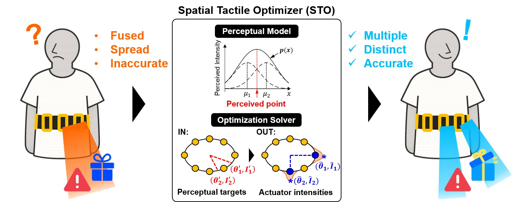
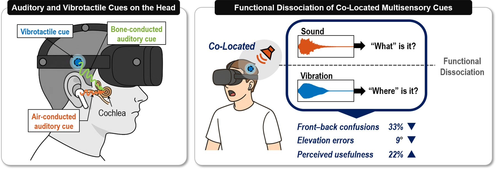
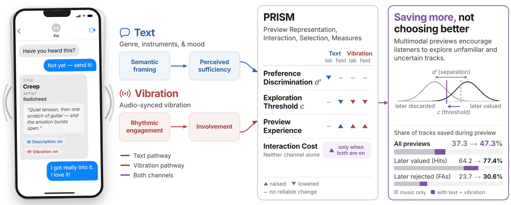
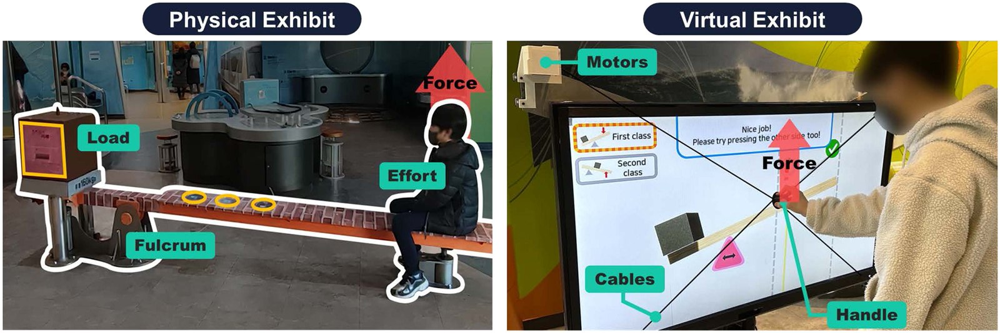
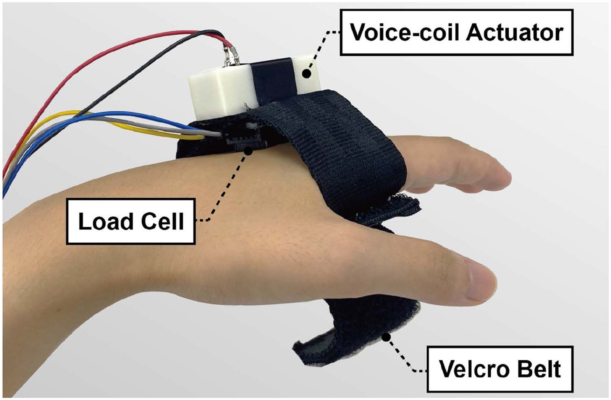
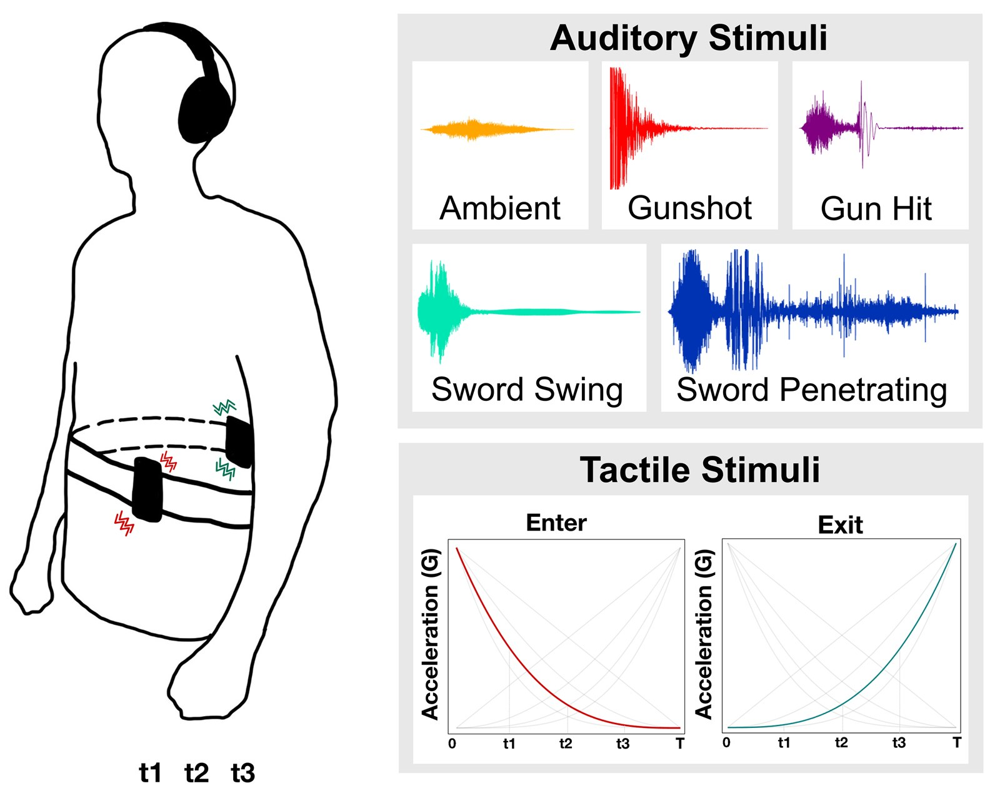
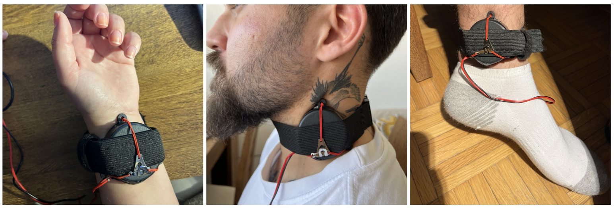
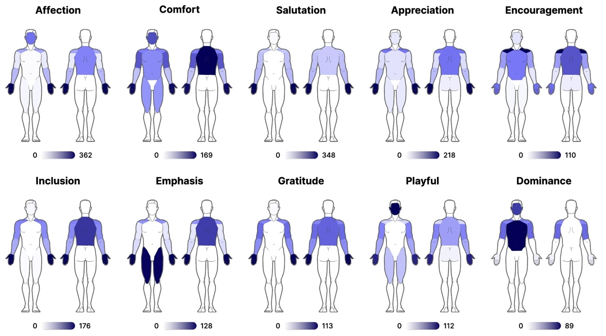

Spatial Tactile Optimizer (STO)
STO balances directional fidelity with perceptual separation so multiple simultaneous targets remain distinguishable on the torso.

Haptics · Human–Computer Interaction
I study how people perceive sensory feedback and use these insights to build haptic interfaces.
I am a Ph.D. candidate in Computer Science and Engineering at POSTECH, advised by Prof. Seungmoon Choi. My research combines perceptual experiments, computational rendering, and the study of interactive experiences.
I am also visiting the University of Waterloo with Prof. Oliver Schneider (June–November 2026), working on user intent estimation and haptic feedback for robotic shared control.
I expect to graduate in February 2027 and am looking for a postdoctoral position starting as soon as possible afterward.
13 projects

STO balances directional fidelity with perceptual separation so multiple simultaneous targets remain distinguishable on the torso.

A head-mounted system examines tactile, bone-conducted, and air-conducted cues, connecting sensory interaction with spatial and semantic tasks.

Text and synchronized vibration reshape short music previews. PRISM separates experiential value and exploration from decision accuracy.

Measuring perceptual tolerance to spatial misalignment and using it to inform directional cueing with a sparse tactile array.

A foot-worn interface uses body-penetrating phantom sensations to investigate a vibrotactile metaphor of physical contact.

A cable-driven force-feedback exhibit brings a virtual lever to life and is evaluated alongside a physical science-museum exhibit.


Characterizing the relationship between contact force, vibration parameters, body location, and perceived intensity.

Coordinated sound and vibration investigate realism, direction, and user experience in body-penetrating phantom sensations.

Embodied and tangible interactions connect a virtual introduction with hands-on exploration of an existing science-museum exhibit.

Studying physiological responses, task performance, and subjective experience across four body placements.

A participatory design approach and seat-based haptic platform explore vibrotactile warnings for driving contexts.

A collaborative analysis of social touch considers the situations and meanings around physical contact.
In STO, I work on keeping tactile targets distinct. In music previews, I distinguish a richer experience from a better decision. Both ask what a change in sensory feedback actually enables a person to do.
I want to extend this approach to interfaces that work with the body's sensory and motor processes, letting people explore and adjust sensory experiences during natural action.